Handcrafted with care, shaped by passion
Explore our collectionHandcrafted with care, shaped by passion
Explore our collection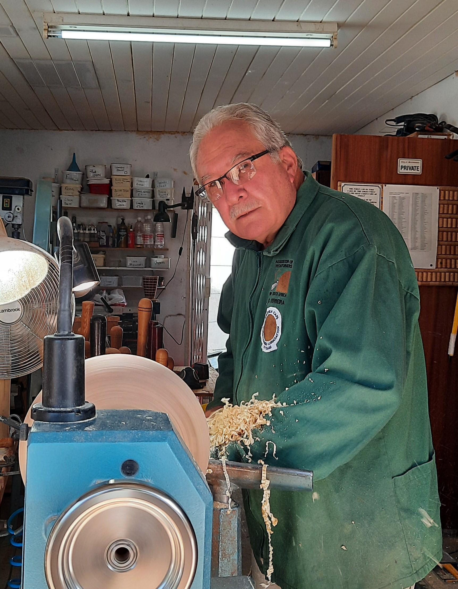
I have always enjoyed working with wood and my love for woodturning dates back to 1986. I joined the Western Cape Woodturners Association in 1995 and due to their encouraging advice, I grew from strength to strength. I am also a member of the Association of Woodturners of South Africa as well as the American Association of Woodturners. I belong to a group of woodturners that have got an outlet at the V&A Waterfront called Waterfront Woodturners. I enjoy working with any piece of wood that has a natural flaw to it. I try to create something out of the natural elements in order to give back to mother nature and showcase the beauty of what lies beneath the bark
Contact:
+27 83 265 5835
gertff3@gmail.com
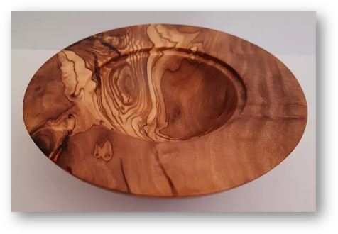
Wild Olive Bowl
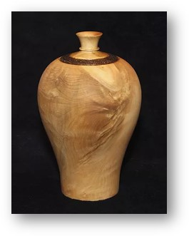
Jacaranda Hollow Form
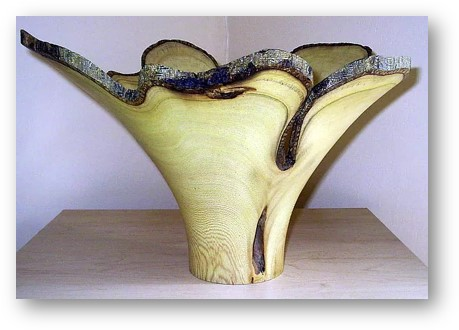
Wild Fig Vase
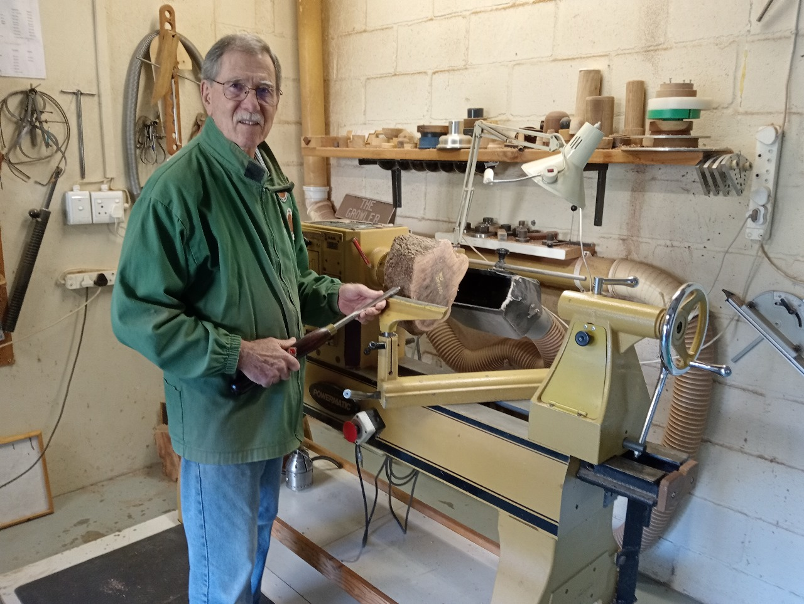
Peter is a retired Urologist, after 31 years in private practice in Cape Town, South Africa. He has been woodturning for 32 years and now turns artistic pieces, using exotic woods and other local woods from domestic felling. He enjoys using techniques like carving, pyrography, piercing, resin work, metal-leaf and colour. He is a founder member of the Western Cape Woodturners Association and the Association of Woodturners of South Africa. He also paints watercolour and in pastels doing portraiture, figure painting and landscapes. He is a member of the SA Society of Artists and the SA National Association for Visual Arts. He has done watercolour demonstrations, and woodturning demonstrations. He exhibits Woodturning and paintings regularly at the SA Society of Artists annual exhibitions, and their merit exhibitions. He established the “Western Cape Doctors Art Group” and participated in exhibitions with this group annually from 2002 to 2023.
Contact:
+27 83 325 9985
pnicolle43@gmail.com
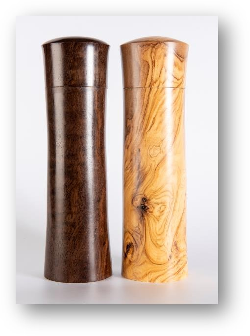
Leadwood & Wild Olive
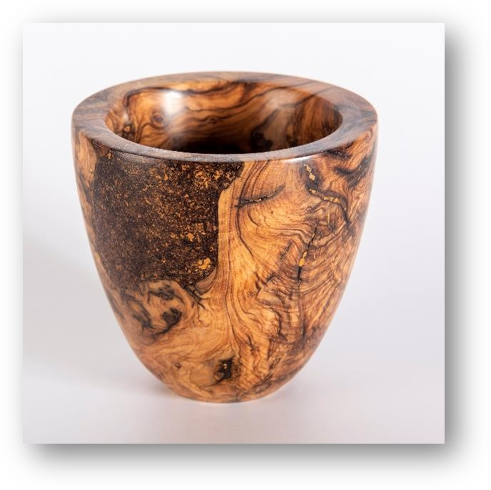
Wild Olive Burr
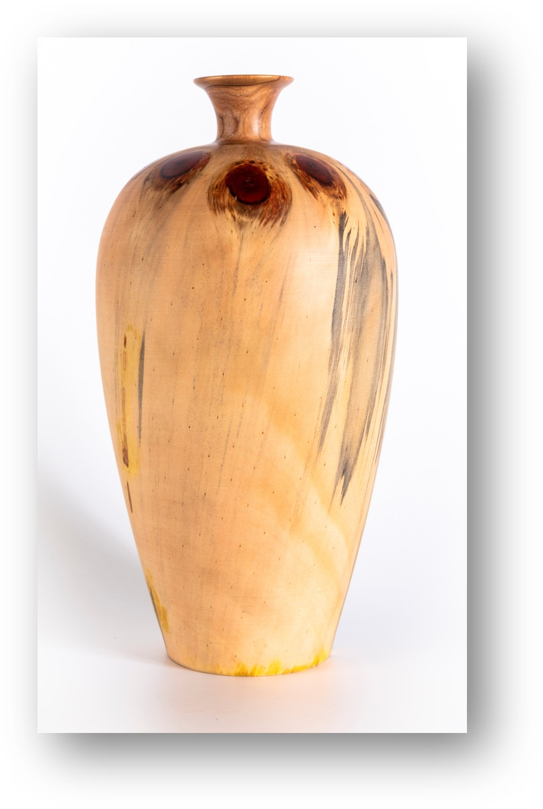
Norfolk Island Pine
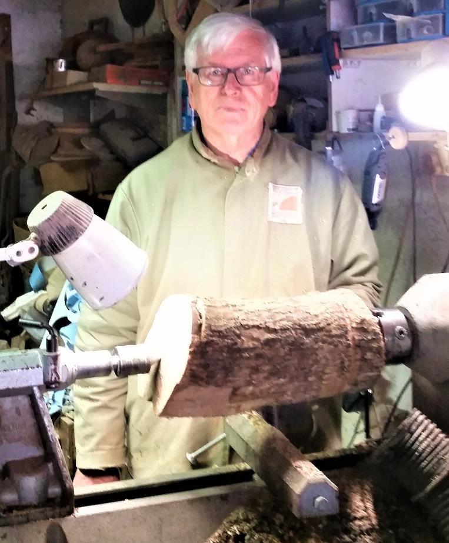
I am a retired pharmacist. In 1985 I took up woodturning and became a founding member of both the WCWA in 1995 and SAWA in 1996 . I have been a part of the Waterfront Woodturners since it's inception in 2000 and still going strong . I've had the privilege to do demos both nationally and locally. My personal situation does not allow me to be more involved . As a way of passing on my experience I demo for a group once a month in Durbanville (that was before covid). On a very regular basis I also publish on the World of Woodturners
Contact:
+27 79 994 9501
thysturn@telkomsa.net
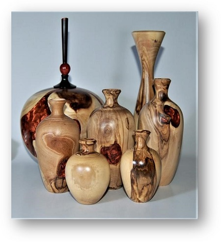
Wild Olive Branches and Rooikrans
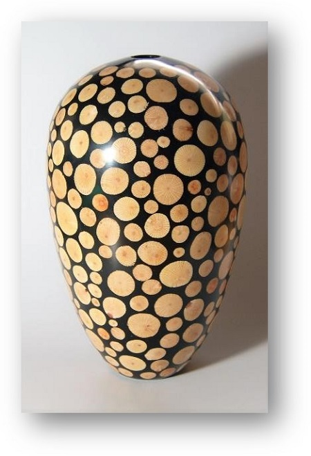
Silky Oak and Black Resin
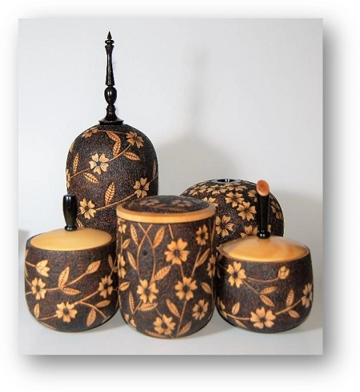
Pyrographed Items
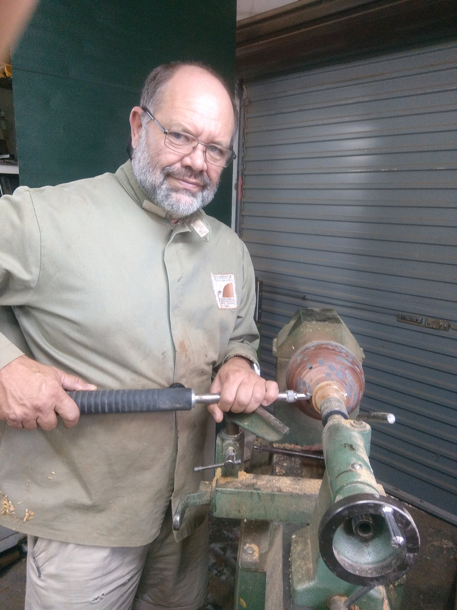
I started woodturning in 1979 in my dad’s workshop, the first object was a club cum baseball bat. Shortly after, my dad went to England and had a couple of workshops with English and American wood turners. When he returned from these trips he was full of ideas and I would spend the time looking over his shoulder and learning the tricks, like cutting with a skew and roughing with a gouge. After school and military service I studied as a teacher in wood and metal work where my love for woodwork was strengthened. I helped a couple of fellow students master proper woodturning techniques and made many a gift for friends. In 2000 I joined the group that formed the Waterfront Woodturners and have spent many hours creating unique turned pieces. I have been a member of the AWSA since about 1995 and have presented at their symposia a number of times. Initially I specialised in turning lace bobbins, and slowly started turning boxes, bowls, natural edge vessels. I really enjoy making miniature furniture Scale 1:12 where all the relevant jointing is also done. Much of my workshop time is taken by carving custom gun stocks and the checkering of the grips. This checkering is sometimes used as embellishment on my turned pieces.
Contact:
+27 72 031 8114
beyerscgrt@gmail.com
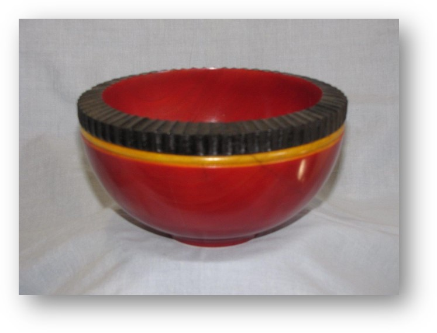
Jacaranda Stained
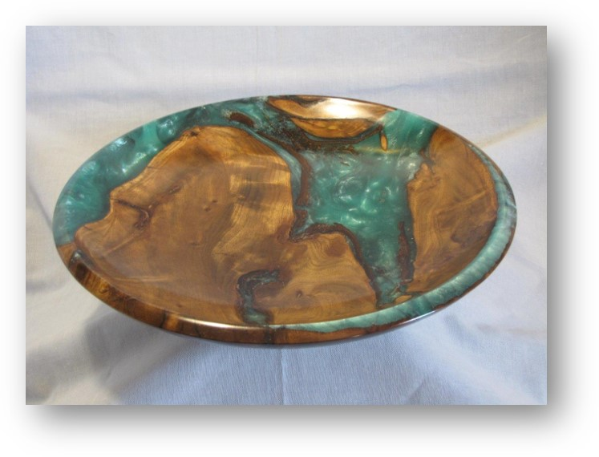
Stinkwood Resin
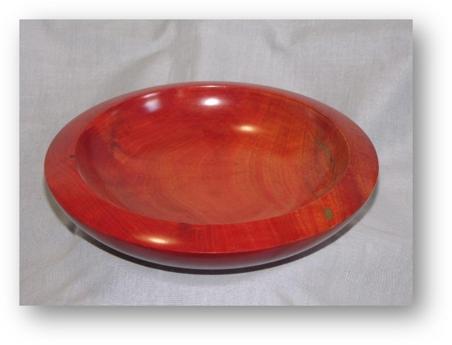
Red Ivory